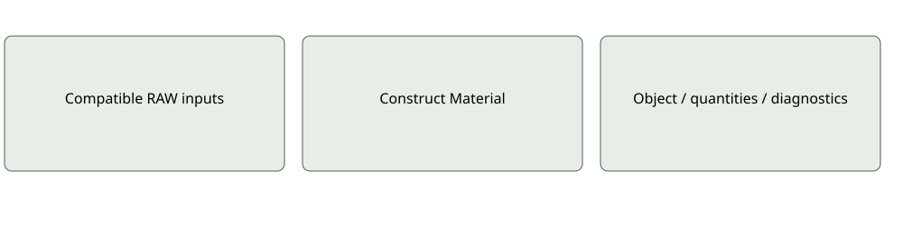

RAW Construct Material
Current compact interface
Inputs: Ingredients; Processes: EvaluatedMachineProcess list; Emissions; Density kg/m³. Optional name/output overrides.
Outputs: Material: recipe-backed DatasetAssignment; optional Summary / Coverage.
Editor holds positive declared output/unit, state and boundary. Output is not the inferred ingredient sum. Connect upstream Material to Ingredients.Materials for nesting; assessment happens in Element GWP.
Use and limitations
Optional and mode-specific ports may remain serialized when hidden. Inspect quantities, source provenance and coverage before interpreting results. A missing input is not an inferred zero.